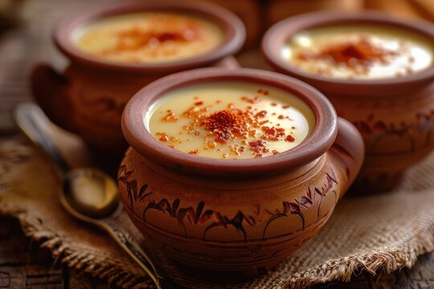

Ingredients for Misti Doi 🍶
- 1 liter Full-fat Milk 🥛
- 1/2 cup Sugar 🍯
- 2 tbsp Water 💧
- 2-3 tbsp Yogurt (as a starter) 🧑🍳
- 1/2 tsp Cardamom Powder 🌿 (optional)
- A few Saffron strands (optional, for color and fragrance) 🌼
Steps 🍴
- In a heavy-bottomed pan, boil the **milk** on medium heat, stirring regularly to prevent it from sticking to the bottom. 🥛🍳
- Once the milk comes to a boil, lower the heat and simmer it for about 15-20 minutes, stirring occasionally, until it thickens slightly. 🥛✨
- While the milk is simmering, in another small pan, add **sugar** and **water**. Heat it over medium heat until the sugar melts and starts to caramelize. Let it cook for 2-3 minutes, until it turns into a golden-brown caramel. 🍯🔥
- Carefully add the caramelized sugar into the simmering milk, stirring gently. The milk should now take on a slight caramel color. Continue to simmer for 5 more minutes. 🍯🥛
- If you like, you can add **cardamom powder** and **saffron strands** to enhance the flavor. 🌿🌼
- Once the milk has thickened and the caramel has fully mixed in, remove it from the heat and allow it to cool down to room temperature. 🍶💧
- After the milk has cooled, add **a spoonful of yogurt** (the starter) to the mixture and mix well. The starter helps in setting the yogurt. 🧑🍳🍶
- Pour the mixture into a clean container or clay pot. Cover it and keep it in a warm place for 6-8 hours, or until it sets. 🕰️
- After the yogurt has set, refrigerate it for a couple of hours before serving. 🍶❄️